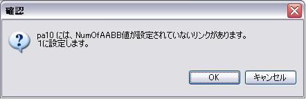

OverviewIf the model for simulations is created from an actual robot's CAD data, etc., form data will be too detailed and the computation time of a simulation will become excessive. In such a case, the computation time of a simulation is shortened by transposing form data to simple bounding box (Below, it is written as BBox.) form. You can specify the minimum number of BBox with which form data is replaced for every link. Therefore, if you specify many number of BBox to the link which collides, calculation accuracy can be improved, if you specify the few number of BBox to the link which does not collide, calculation can be speeded up. Specification of the minimum number of BBox
First, please load a model and choose link(①). The following messages will be displayed, if you click a BBox display button when there is a link to which the value of NumOfAABB is not set. 
If you click "OK", unset up link will be set as 1 and BBox form will be displayed. Your click of "Cancel" will not display BBox form. A simulation and a collision checkPlease operate it like usual. The data used for an collision check is the value set up by NumOfAABB. Form data is changed, if the value of NumOfAABB is set up even if the BBox display has disappeared. Moreover, one model cannot have the link changed into BBox, and a link with the original form. Please use one of whether NumOfAABB of all the links is "original data", or the value is set to all. Therefore, when you change a model into BBox, in order to set a value to all the links, please turn ON a BBox display. Saveing of a setupPlease save a project. A setup is saved at a project file. The model loaded from the same model file
All the models loaded from the same model file are similarly changed into BBox.
For example, when RobotA and RobotB are loaded from the file "PA10.main.wrl",
if a setup of NumOfAABB of the link J1 of RobotA is changed, a setup of NumOfAABB of the link J1 of RobotB is also changed. |